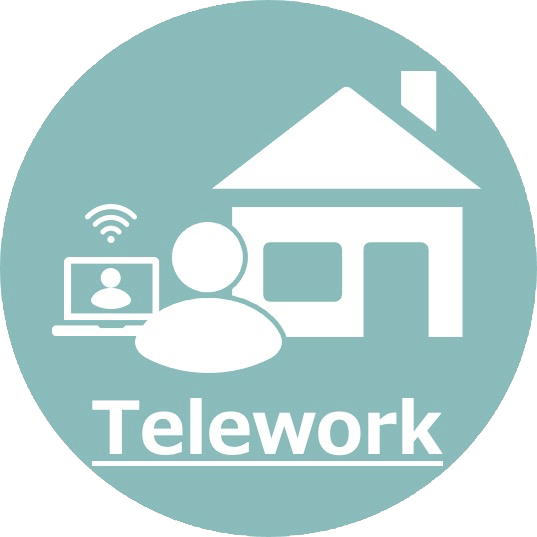

- トップ
- 「第Ⅱ期 中小企業デジタル化応援隊」事業のIT専門家登録について
「第Ⅱ期 中小企業デジタル化応援隊」事業のIT専門家登録について
第Ⅰ期に引き続き、中小企業庁/中小機構が推進する「第Ⅱ期 中小企業デジタル化応援隊」事業のIT専門家に登録いたしました。
※「テレワーク導入コンサルスキル強化制度」の「テレワークスキル＋（プラス）」を取得しました。
「中小企業デジタル化応援隊」事業について
「中小企業デジタル化応援隊」事業とは、全国の中小企業・小規模事業者のデジタル化・IT活用を支援する公式事業です。主なポイントとしては以下のものがあげられます。
- 1時間あたり最低500円で、IT専門家からデジタル化について支援を受けられる ※最大3,500円/時の保証制度
- 支援事業実施期間は2021年12月17日（金）まで（契約締結の期限は2021年11月30日（火）まで）
- 対象は中小企業（中小企業の定義は下記ホームページを参照ください。）
詳細は、下記のホームページにてご確認ください。
当方での支援計画案
【支援計画例1】経営課題解決のためのデジタル化提案
御社の経営課題についてお聞かせいただき、事業の拡大・組織の活性化・作業効率化等を目指すデジタル化を提案いたします。
【現状把握・業務分析】
まずは、御社の業務課題および現状の業務フローについてヒアリングさせていただきます。
経営者もしくは部門長の方に業務課題等をお聞かせいただいたのちに、現状の業務内容について各担当者へのヒアリングを実施します。
ヒアリングは、現地もしくは ZOOMやMicrosoft Teams 等でのオンラインでの対応を想定しています。
【課題特定】
ヒアリングさせていただいた内容を元に課題を分析します。
課題のうち、デジタル化によって解決できるものを特定して、導入効果（目標）を明確化します。
【ツール選定と活用提案】
特定された課題に対して、有効なツールの選定をします。
ツールはあくまでも手段であるため、導入されたツールが有効活用できるよう支援いたします。
- 期間
- 3週間
26時間（現状把握・業務分析16時間、課題特定3時間、ツール選定と活用提案9時間）
- 費用
- 実質負担総額65,000円 (2,500円／時）
・ 通常価格156,000円（6,000円／時）
・ 補助金額91,000円（3,500円／時）
※実質負担の最低金額は500円/時です。ツールの契約料・利用料は含まず、当方からの支援に関する費用のみ記載しております。
※旅費等の費用が別途必要となる場合があります。本ページの下部に記載している注意事項を参照ください。
※支援の必要期間・費用は一例です。支援内容など状況により上下致しますので、ご了承ください。
【支援計画例2】テレワーク（リモートワーク）導入支援
新型コロナウィルスの感染拡大によって、テレワーク（リモートワーク）の導入を求める声が大きくなっています。ただ、実際どこから手を付けてよいか分からないといった経営者の方もいらっしゃると思いますので、ご要望をお伺いしながら適切なツールのご提案をいたします。
【ツール選定と活用提案】
テレワークで実施したい業務をヒアリングして、必要なツールをご提案いたします。
以下のようなツールを想定していますが、これらのツールに限らずご要望に応じた支援をいたします。
★リモート会議ツール
ZOOM、Microsoft Teams
★コミュニケーション・情報共有ツール
Kintone、Chatwork、Slack
★テレワークシステム
NTT 東日本 - IPA 「シン・テレワークシステム」
https://telework.cyber.ipa.go.jp/news/
自宅から職場のネットワークにリモート接続できるシステムです。
※当方はこれらの企業とは関連はありません。
【導入支援】
選定したツールの導入支援をいたします。
導入したツールを社員の方が有効活用できるよう使用方法などのレクチャーをいたします。
- 期間
- 2週間
15時間（ツール選定と活用提案3時間、導入支援12時間）
- 費用
- 実質負担総額7,500円 (500円／時）
・ 通常価格60,000円（4,000円／時）
・ 補助金額52,500円（3,500円／時）
※実質負担の最低金額は500円/時です。ツールの契約料・利用料は含まず、当方からの支援に関する費用のみ記載しております。
※旅費等の費用が別途必要となる場合があります。本ページの下部に記載している注意事項を参照ください。
※支援の必要期間・費用は一例です。支援内容など状況により上下致しますので、ご了承ください。
【支援計画例3】グループウェア（コミュニケーションツール）導入支援
事業を進めるうえで社内の情報共有は欠かせないものですが、より円滑な情報共有ができるデジタル化の仕組みをご提案いたします。
【ツール選定と活用提案】
Kintone、Chatwork、Slackといったコミュニケーションツール・情報共有ツールを使って、より円滑なコミュニケーション・情報共有ができるようご提案いたします。
もちろん、これらのツールに限らずご要望に応じた支援をいたします。
※当方はこれらの企業とは関連はありません。
※こちらのブログ記事も合わせて参照いただけると幸いです。
【導入支援】
コミュニケーションツール・情報共有ツールといったツールは、導入しただけではメリットがありません。
社員の方がいかにこれらのツールを積極的に活用していけるかが重要となります。
単なるツールの使用方法のみならず、どうすれば有効活用できるのかなど具体事例を元に支援いたします。
- 期間
- 3週間
20時間（ツール選定と活用提案4時間、導入支援16時間）
- 費用
- 実質負担総額10,000円 (500円／時）
・ 通常価格80,000円（4,000円／時）
・ 補助金額70,000円（3,500円／時）
※実質負担の最低金額は500円/時です。ツールの契約料・利用料は含まず、当方からの支援に関する費用のみ記載しております。
※旅費等の費用が別途必要となる場合があります。本ページの下部に記載している注意事項を参照ください。
※支援の必要期間・費用は一例です。支援内容など状況により上下致しますので、ご了承ください。
注意事項
途中解約について
ご契約後、作業を進めていく中で当方からの提案や支援内容がご希望にそぐわない場合などは途中で解約することが可能です。ただし、それまでにかかった作業分についての費用は発生いたしますのでご了承ください。
旅費等について
支援実施にあたり必要な旅費については、往復１回分のみは「中小企業デジタル化応援隊」事業から支払われます。それ以上の旅費が必要な場合は、同等額を別途ご負担いただく必要があります。また、ZOOM等でのオンライン会議でも対応可能です。また、支援計画をお客様と協議する中で、支援を実施するにあたりツールなどの購入が必要となった場合は、実費をご負担いただく必要があります。